Os bastidores de The Life of a Showgirl foram marcados por uma atmosfera intensa, artística e extremamente emocional. Durante o processo de criação da era, Taylor Swift buscou transformar o álbum em algo maior do que apenas música: ela queria criar uma experiência visual e sentimental completa, como um verdadeiro espetáculo. Os ensaios fotográficos aconteceram em estúdios inspirados em teatros clássicos, com luzes douradas, cortinas vermelhas, espelhos iluminados e cenários vintage que reforçavam o conceito glamouroso da era.
O processo de gravação do álbum foi descrito como um dos mais emocionais da carreira de Taylor. Muitas músicas nasceram de experiências pessoais, reflexões sobre fama, amadurecimento e liberdade criativa. Segundo rumores entre fãs e entrevistas promocionais, Taylor queria que o álbum tivesse uma sensação cinematográfica, como se cada faixa fosse parte de um grande espetáculo dividido em atos.
Grande parte das gravações aconteceu durante madrugadas longas, em ambientes silenciosos e intimistas, onde Taylor pôde escrever e regravar detalhes das músicas com total liberdade criativa. Pessoas próximas à produção comentaram que ela estava extremamente envolvida em cada parte do projeto, desde figurinos até iluminação dos clipes e direção estética das fotos promocionais. O objetivo era fazer com que cada imagem transmitisse emoção, elegância e vulnerabilidade ao mesmo tempo.
A “Galeria Showgirl” nasceu justamente dessa ideia de mostrar não apenas o brilho da era, mas também o que existia por trás dela. As fotos de bastidores revelam momentos espontâneos, ensaios, cenas descontraídas com a equipe, ajustes de figurino, maquiagem e gravações emocionantes dos videoclipes. Em várias imagens, Taylor aparece sorrindo entre takes, escrevendo em cadernos, revisando cenas ou simplesmente observando o palco vazio antes das gravações começarem.
Toda a construção visual de The Life of a Showgirl foi pensada para parecer cinematográfica, como se cada foto fosse uma cena perdida de um grande musical moderno. A galeria da era representa exatamente isso: o encontro entre glamour, emoção, arte e autenticidade.
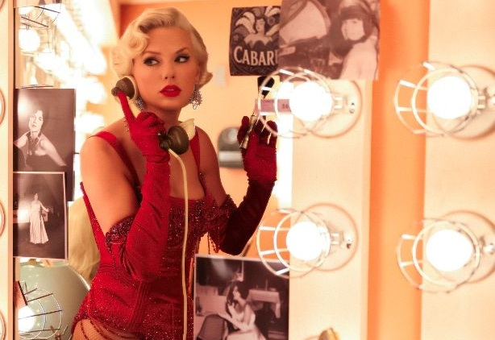
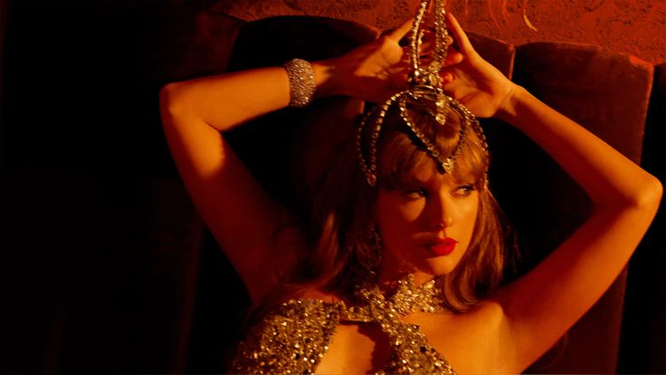
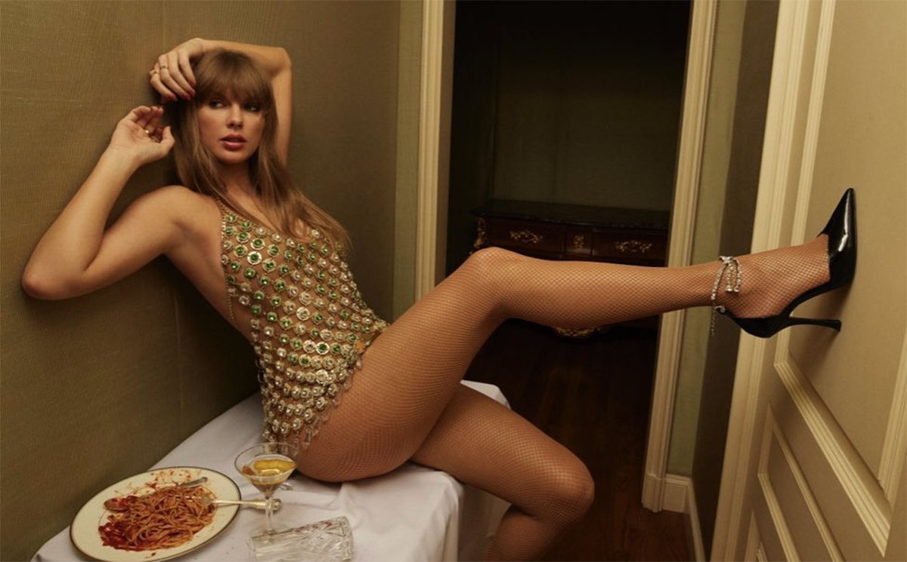
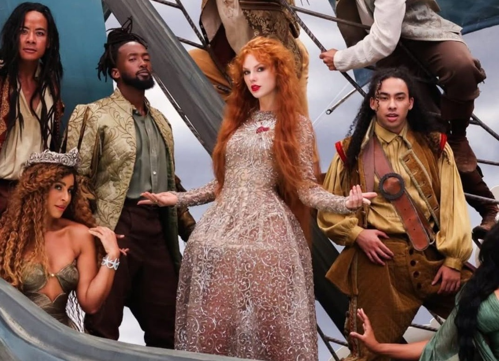
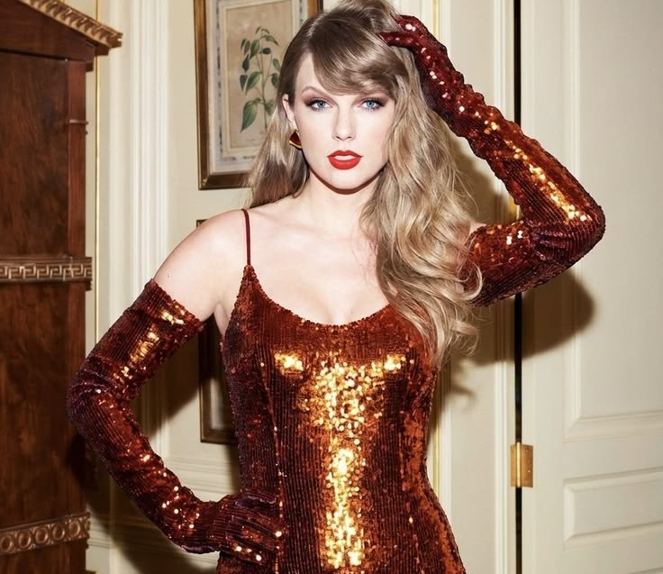
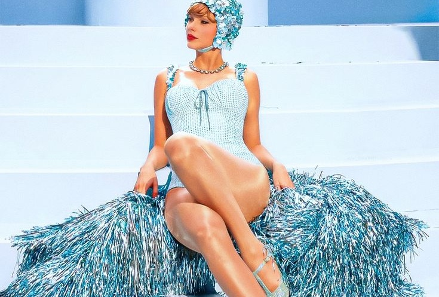
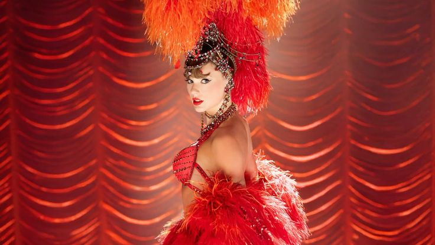
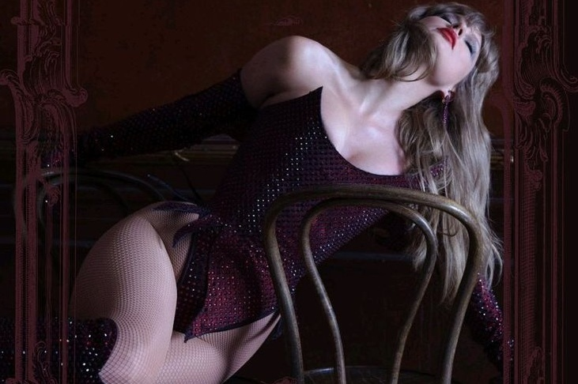
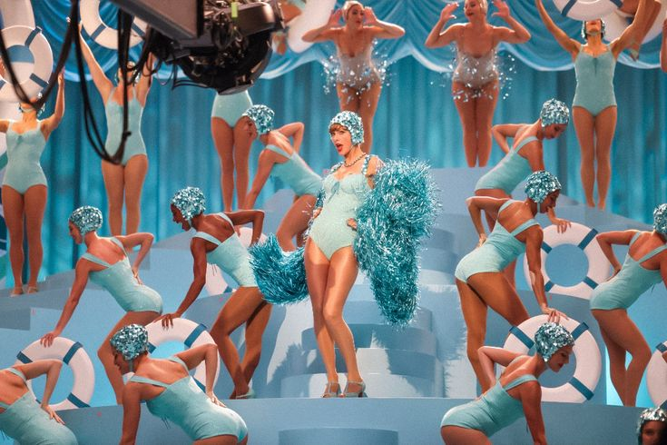
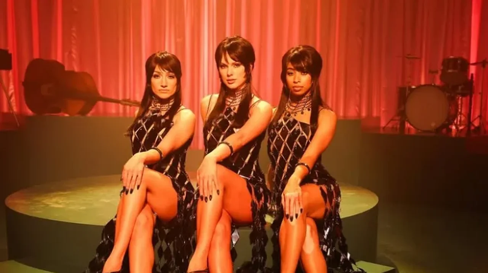
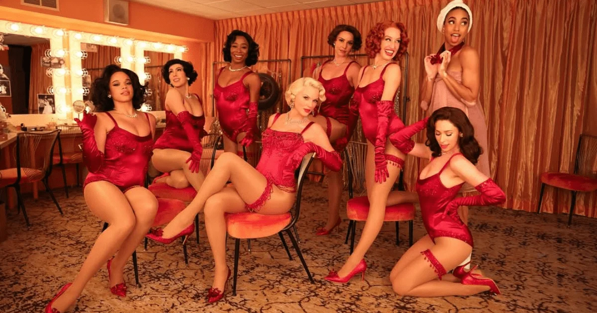